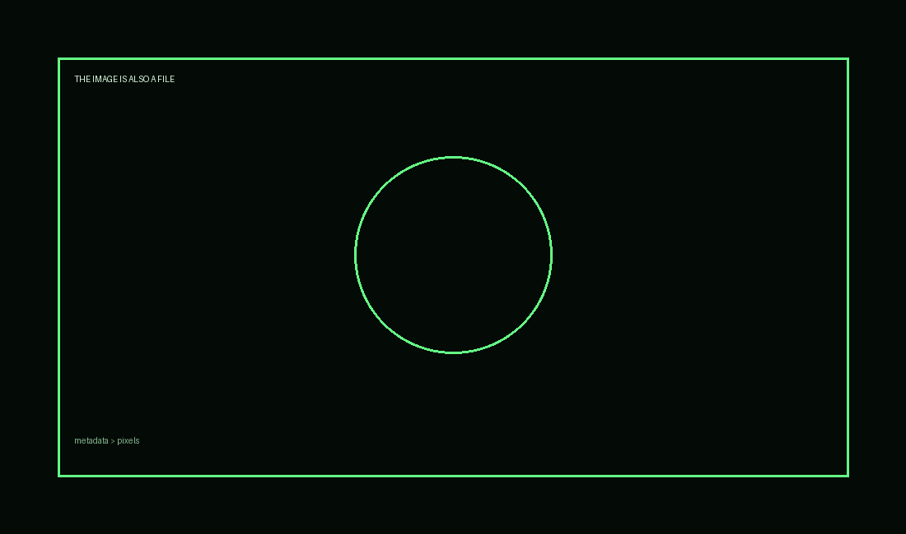

RETO ALEPH // 42
VII · MEMORIA
estación 41 / 42
41
Más allá de los píxeles
La imagen visible no contiene letras escondidas. El archivo sí contiene información.

Pista
Descarga/inspecciona metadata PNG. Herramientas como ExifTool, strings o lectores de chunks PNG pueden ayudarte.
Esta numeración identifica la estación; no indica un orden obligatorio.